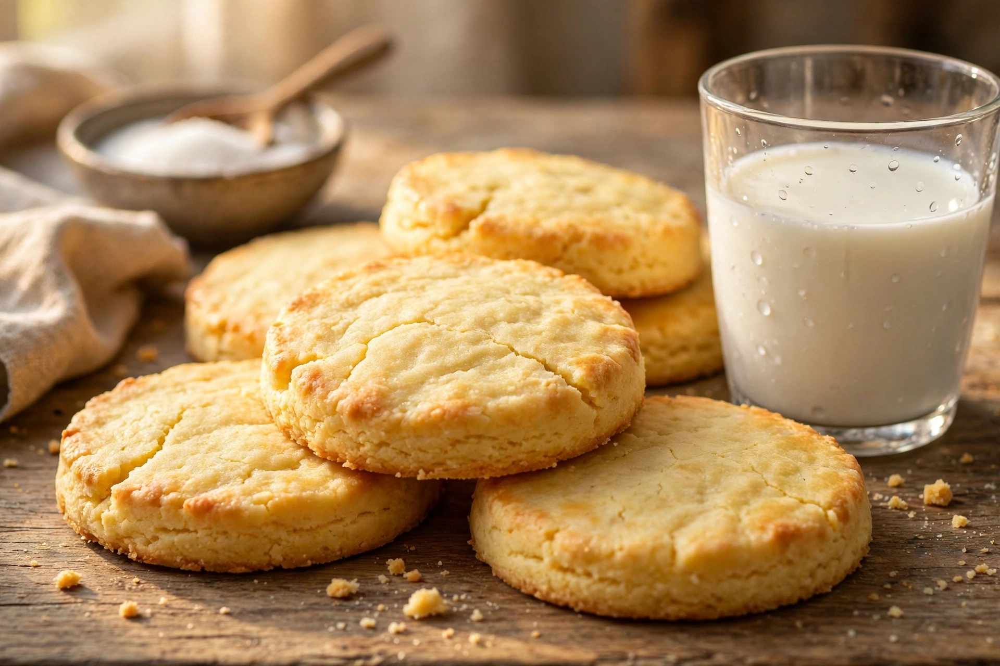

⬅️ Retour au site Madeleine

⏱️ 10 min
🔥 15 min
💰 Sans beurre
Ingrédients
- 250g farine
- 100g sucre
- 150ml lait
- 1 oeuf (donne la couleur jaune)
- 1 sachet levure chimique
- Vanille
Recette
- Mélange farine + sucre + levure.
- Ajoute oeuf + lait petit à petit.
- Fais des boules et aplatis en galettes.
- Four 180°C 15 min ou poêle 3 min/côté. Jaune doré !
Voir recette Madeleine →